瞭解如何上傳影片、同步錄影，並在分析完成後查看跑步影片、速度、加速度、步幅、關節角度與歷史紀錄。Learn how to upload videos, sync multi-device recording, and review speed, acceleration, stride, joint angles, and history after analysis.
找不到符合搜尋的章節。No sections matched your search.
開始使用Getting Started
關於百米分析About Sprint Analysis
上傳既有影片，或在現場以多台裝置同步錄影——百米分析處理完成後，即可在回放頁查看速度、加速度、步幅與關節角度。Upload existing footage or record live with multiple synced devices — once Sprint Analysis finishes processing, view speed, acceleration, stride, and joint angles on the Playback page.
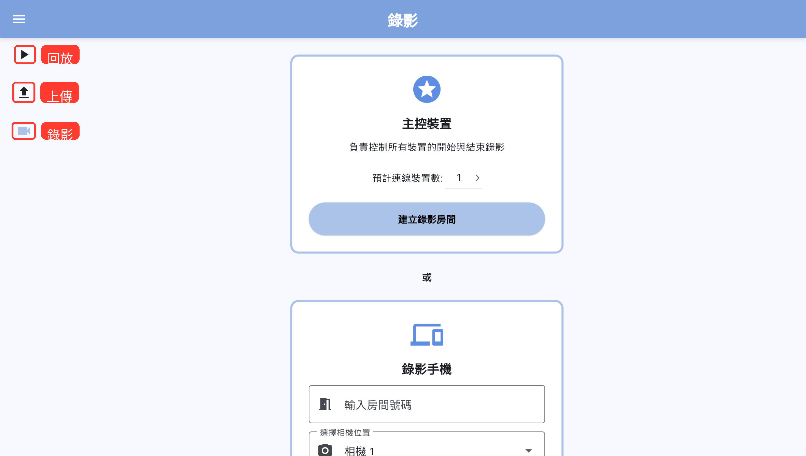
左側導覽列提供三個主要入口：回放用來查看分析結果，上傳用來送出既有影片，錄影用來建立現場同步錄影房間。The sidebar provides three main entries: Playback to view analysis results, Upload to submit existing videos, and Record to create a live sync recording room.
▶
1 · 回放Playback
選擇選手，查看分析影片、圖表與歷史紀錄。Select a runner to view analysis videos, charts, and history.
2 · 上傳Upload
選擇影片，設定選手與錨點後送出分析。Choose videos, configure runner and anchor points, then submit for analysis.
3 · 錄影Record
建立多機同步錄影房間，完成後自動上傳。Create a multi-device sync recording room; videos upload automatically when done.
提示：在手機直式畫面中，請使用底部圖示切換頁面。在平板、電腦或橫向畫面中，請點選左上角選單，再從側邊欄切換頁面。Tip: On a phone in portrait mode, use the bottom icons to switch pages. On a tablet, desktop, or landscape view, tap the top-left menu and switch from the sidebar.查看手機版與電腦版差異View mobile vs. desktop differences
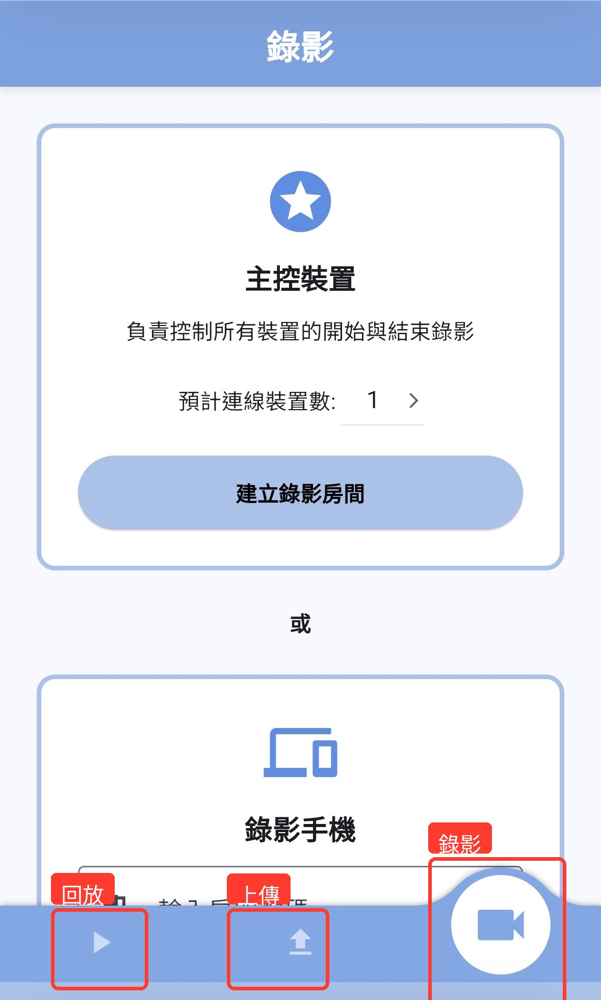
手機版：底部導覽列Mobile: bottom navigation bar電腦 / 平板版：左側側邊欄Desktop / Tablet: left sidebar
上傳Upload
上傳影片進行分析Upload Video for Analysis
所有相機影片備妥時，選擇「一起上傳」一次送出；若需分批補齊，選擇「分別上傳」逐次完成。上傳後設定錨點，即可送出分析。When all camera videos are ready, choose "Upload All Together" to submit at once. If you need to add videos in batches, choose "Upload Separately". Set anchor points after uploading to submit for analysis.
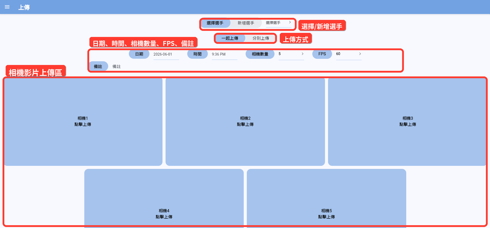
上傳頁面上方可切換選手與上傳方式，中間設定日期、時間、相機數量、FPS 與備註；下方相機區塊用來選擇對應影片。The top of the Upload page lets you switch runner and upload mode. The middle sets date, time, camera count, FPS, and notes. The camera blocks below are where you select the corresponding videos.
Step 1 · 選擇上傳方式Step 1 · Choose Upload Mode
依照手上的影片情況，選擇以下其中一種模式。Choose one of the following modes based on your available footage.
一起上傳Upload All Together
適合所有相機影片都已準備好時使用。選好相機數量後，依序上傳每個相機的影片，全部完成後一次送出分析。Use when all camera videos are ready. Set the camera count, upload each camera's video in order, then submit for analysis all at once.
分別上傳Upload Separately
適合無法一次備齊所有相機影片時使用。第一次選「新增紀錄」建立紀錄並上傳；之後補傳其他相機時，選「選擇紀錄」找回同一筆紀錄繼續完成。所有相機補齊後才會自動送出分析。Use when you cannot gather all camera videos at once. Select "New Record" the first time to create a record and upload. Later, select "Select Record" to find the same record and continue adding videos. Analysis is submitted automatically once all cameras are complete.
Step 2 · 選擇或新增選手Step 2 · Select or Add Runner
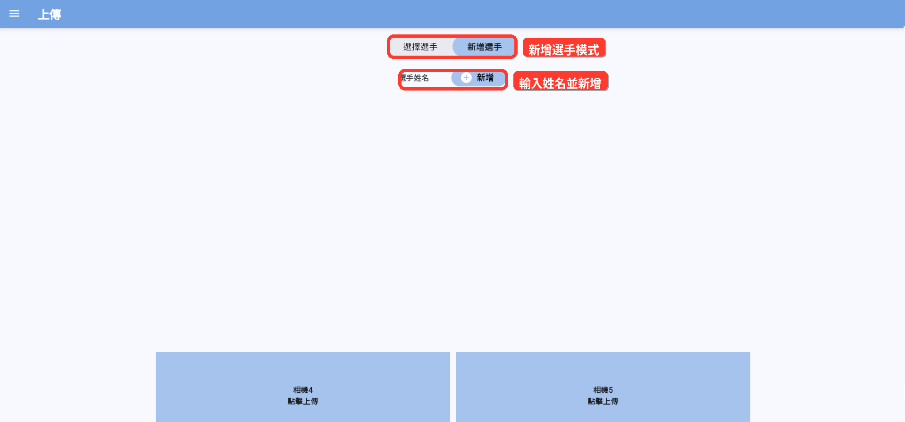
切換到「新增選手」後，輸入選手姓名並點選「新增」。新增完成後，App 會回到選擇選手模式並選取剛建立的選手。Switch to "Add Runner", enter the runner's name, and tap "Add". After adding, the app returns to runner selection mode with the new runner selected.
選擇既有選手Select Existing Runner
選擇 選擇選手。Select Select Runner.
從清單中選擇選手。Choose a runner from the list.
建立新選手Create New Runner
選擇 新增選手。Select Add Runner.
輸入選手姓名。Enter the runner's name.
點選 新增。Tap Add.
Step 3A · 一起上傳Step 3A · Upload All Together
所有相機影片都已備妥時使用。Use when all camera videos are ready.
在上傳方式中選擇 一起上傳。In the upload mode, select Upload All Together.
設定日期、時間、相機數量、FPS(禎率)與備註。Set date, time, camera count, FPS (frame rate), and notes.
依照畫面上的相機區塊，點選 相機 1 點擊上傳、相機 2 點擊上傳 等區塊。Tap the camera blocks on screen — Camera 1 Tap to Upload, Camera 2 Tap to Upload, etc.
從裝置中選擇對應相機的影片檔。Select the corresponding video file from your device.
影片上傳完成後，依提示設定錨點。After the video uploads, set anchor points as prompted.
每個相機影片都上傳完成後，點選 上傳。Once all camera videos are uploaded, tap Upload.
Step 3B · 分別上傳Step 3B · Upload Separately
無法一次備齊所有相機影片時使用。Use when you cannot gather all camera videos at once.
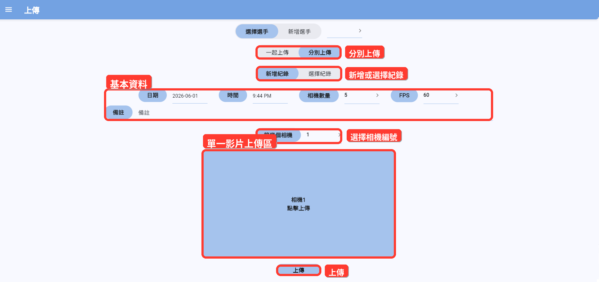
分別上傳模式可先建立一筆新紀錄，選擇本次要上傳的相機編號，再上傳該相機影片。其他相機影片可之後再補上。In separate upload mode, first create a new record, select the camera number for this upload, then upload that camera's video. Remaining cameras can be added later.
在上傳方式中選擇 分別上傳。In the upload mode, select Upload Separately.
選擇 新增紀錄。Select New Record.
設定日期、時間、相機數量、FPS 與備註。Set date, time, camera count, FPS, and notes.
在 第幾個相機 中選擇這次要上傳的相機編號。In Which Camera, select the camera number for this upload.
點選影片區塊並選擇影片檔。Tap the video block and select the video file.
影片上傳完成後，設定錨點。After the video uploads, set anchor points.
點選 上傳。Tap Upload.
如果尚有其他相機影片未上傳，App 會提示還需要補上的相機。之後請選擇 選擇紀錄，從未分析紀錄表中選擇要補傳的紀錄，再補上剩餘影片。If other camera videos are still missing, the app will indicate which cameras still need to be added. Select Select Record, choose the pending record from the unanalyzed records list, and upload the remaining videos.
錄影Record
現場錄影上傳Live Recording & Upload
現場錄影上傳可讓多台裝置加入同一個房間，由主控裝置同步開始與停止錄影，錄完後自動上傳影片進行分析。Live Recording lets multiple devices join the same room. The master device starts and stops recording in sync, and videos are automatically uploaded for analysis when done.
建立錄影房間Create Recording Room
在主控裝置前往 錄影。On the master device, go to Record.
在 主控裝置 區塊選擇預計連線裝置數。In the Master Device section, select the expected number of connected devices.
點選 建立錄影房間。Tap Create Recording Room.
將畫面上的房間號碼提供給其他錄影手機。Share the room number shown on screen with the other recording phones.
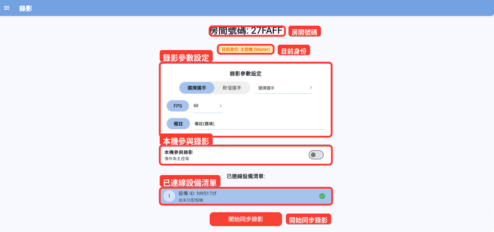
建立房間後，畫面會顯示房間號碼、主控端身份、錄影參數設定、本機參與錄影選項與已連線設備清單。請將房間號碼提供給其他錄影手機加入。After creating the room, the screen shows the room number, master identity, recording settings, local participation option, and connected device list. Share the room number with other recording phones to join.
加入錄影房間Join Recording Room
在每一台錄影手機前往 錄影。On each recording phone, go to Record.
在 錄影手機 區塊輸入房間號碼。In the Recording Phone section, enter the room number.
選擇此手機負責的相機位置，例如相機 1、相機 2。Select the camera position this phone covers, e.g. Camera 1, Camera 2.
點選 加入錄影房間。Tap Join Recording Room.
保持在此頁面，等待主控端開始錄影。Stay on this page and wait for the master device to start recording.
調整相機畫面Adjust Camera View
加入房間後，錄影手機會進入相機畫面。請將裝置橫放，並完成以下設定後等待主控端開始錄影。After joining the room, the recording phone enters the camera view. Rotate the device to landscape and complete the following before waiting for the master device to start.
拖曳左側縮放滑桿調整鏡頭倍率。Drag the zoom slider on the left to adjust the lens magnification.
點選底部更換鏡頭切換可用的後置鏡頭。Tap Switch Camera at the bottom to cycle through available rear lenses.
點選右上角全螢幕圖示放大檢查畫面構圖。Tap the fullscreen icon in the top-right to expand and inspect the framing.
畫面左上角出現錨點已設定標示時，代表此相機已完成錨點設定。When the Anchor Set badge appears in the top-left, the anchor points for this camera are configured.
設定錄影參數Configure Recording Settings
選手：可選擇既有選手，也可新增選手。Runner: select an existing runner or add a new one.
FPS：可選擇 30 或 60。FPS: choose 30 or 60.
備註：可輸入本次測試說明。Notes: enter a description for this session.
讓主控裝置也參與錄影Let the Master Device Also Record
在房間畫面開啟 本機參與錄影。In the room screen, enable Local Device Participates in Recording.
選擇本機相機編號。Select this device's camera number.
設定好鏡頭畫面與錨點。Configure the camera view and anchor points.
若主控裝置只負責控制錄影，請關閉 本機參與錄影。If the master device is only controlling the recording, disable Local Device Participates in Recording.
開始與停止同步錄影Start and Stop Sync Recording
確認已選擇或新增選手。Confirm a runner has been selected or added.
確認所有相機都已連線。Confirm all expected cameras are connected.
確認所有參與錄影的裝置都已就緒。Confirm all participating devices are ready.
點選 開始同步錄影。Tap Start Sync Recording.
錄影結束時，主控端點選 停止錄影並上傳。When finished, the master device taps Stop Recording and Upload.
錨點Anchor
設定錨點Set Anchor Points
錨點用來標記影片中跑道或校正區域的位置，協助系統判讀影像中的實際距離。Anchor points mark the track or calibration area in the video, helping the system determine real-world distances in the image.
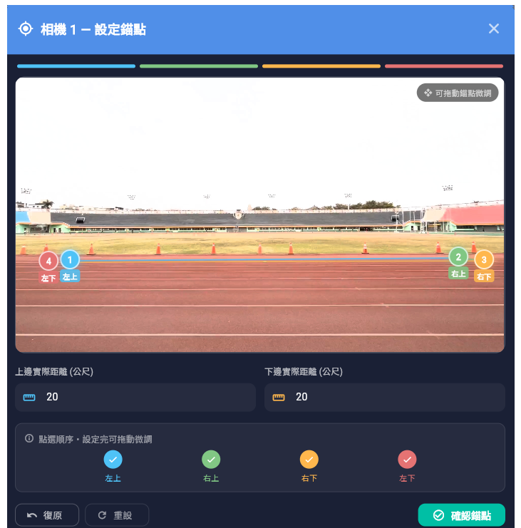
依照左上→右上→右下→左下的順序點選四個錨點，再輸入上邊與下邊的實際距離（公尺），最後點選「確認錨點」。Tap the four anchor points in order — top-left → top-right → bottom-right → bottom-left — then enter the top and bottom real-world distances (metres) and tap "Confirm Anchor Points".
選取四個錨點Select Four Anchor Points
在縮圖上點選 左上。Tap Top Left on the thumbnail.
接著點選 右上。Then tap Top Right.
再點選 右下。Then tap Bottom Right.
最後點選 左下。Finally tap Bottom Left.
輸入實際距離Enter Real-World Distances
在影像下方輸入 上邊實際距離（公尺） 與 下邊實際距離（公尺）。兩個距離都必須大於 0。完成後點選 確認錨點。Below the image, enter the Top Edge Distance (meters) and Bottom Edge Distance (meters). Both values must be greater than 0. Tap Confirm Anchor Points when done.
修改或略過錨點Edit or Skip Anchor Points
點選 復原，可移除上一個錨點。Tap Undo to remove the last anchor point.
點選 重設，可清除全部錨點。Tap Reset to clear all anchor points.
點選右上角關閉按鈕，可略過本次錨點設定。Tap the close button in the top-right corner to skip anchor point setup for this video.
影片縮圖右上角顯示 錨點已設定 時，代表此相機已完成錨點設定。When Anchor Set appears in the top-right corner of the thumbnail, anchor points for that camera are complete.
設定完成後，你可以拖曳任一錨點微調位置。拖曳時會顯示放大鏡，方便精準對齊。After placing all points, drag any anchor point to fine-tune its position. A magnifier appears while dragging for precise alignment.
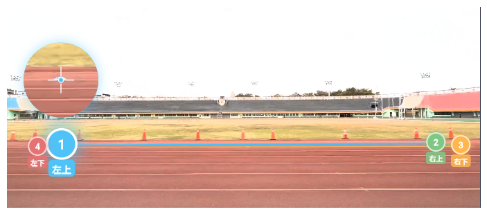
拖曳錨點時，畫面上會出現放大鏡，協助精準對齊跑道標線或校正點。A magnifier appears on screen while dragging an anchor point, making it easier to align precisely with track markings or calibration targets.
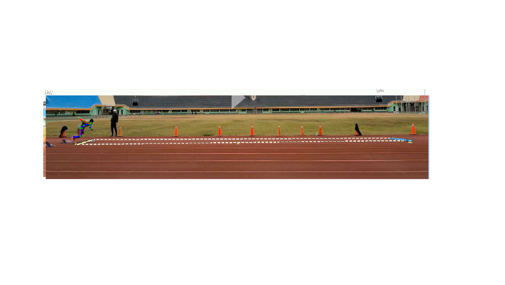
錨點形成的矩形建議完整涵蓋欲校正的跑道區域，讓上邊與下邊距離可以對應到實際量測距離。The rectangle formed by anchor points should fully cover the track area to be calibrated, so the top and bottom edges correspond to measured real-world distances.
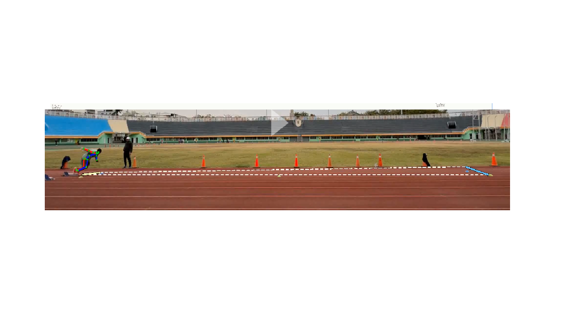
不建議將錨點框得過窄或角度偏斜。若矩形變成梯形，前方跑道會被壓縮，可能影響後續距離與姿態判讀。Avoid making the anchor rectangle too narrow or skewed. If it becomes a trapezoid, the near end of the track is compressed, which may affect distance and pose estimation.
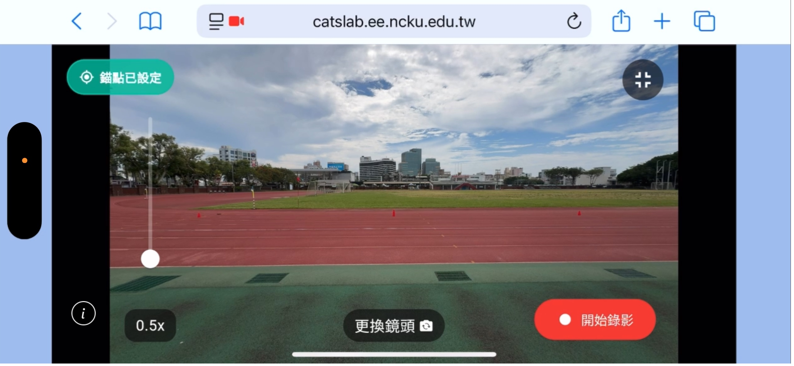
拖曳並確認好錨點後，點擊「開始錄影」即開始錄影。Once anchor points are set and confirmed, tap "Start Recording" to begin.
分析狀態Analysis Status
查看分析進度Check Analysis Status
分析可能需要一段時間。當紀錄仍在處理中，回放頁會顯示進度。Analysis may take some time. While a record is still processing, the Playback page shows the progress.
你可以留在回放頁等待，App 會自動更新分析狀態。分析完成後，影片、圖表與數據會出現在畫面上。Stay on the Playback page and the app will automatically update the analysis status. When analysis is complete, the video, charts, and data will appear on screen.
回放Playback
回放Playback
選擇選手後，查看該選手的影片、分析圖表、影片資訊與歷史紀錄。After selecting a runner, view their video, analysis charts, video info, and history.
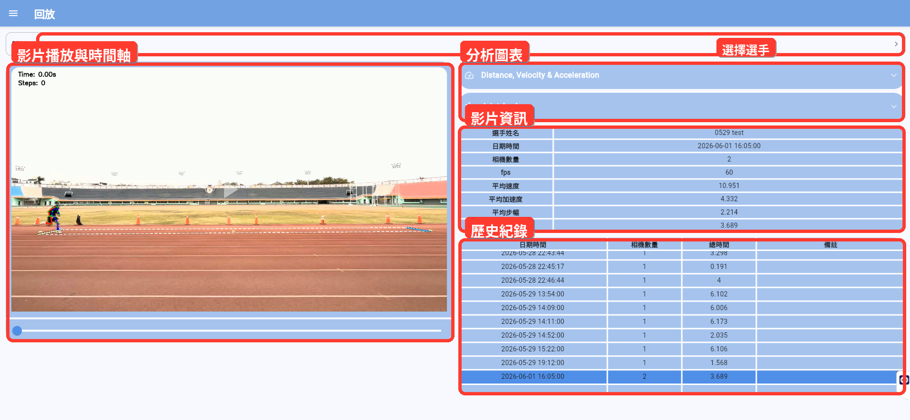
回放頁面會把影片播放區、分析圖表、影片資訊與歷史紀錄放在同一個畫面中。選擇選手後，可從歷史紀錄切換不同分析結果。The Playback page combines the video player, analysis charts, video info, and history in one view. After selecting a runner, switch between different analysis results from the history.
選擇選手Select Runner
點選頁面上方的 選擇選手。Tap Select Runner at the top of the page.
從清單中選擇要查看的選手。Choose the runner you want to view from the list.
App 會自動載入該選手最近一次紀錄。The app automatically loads the runner's most recent record.
如果此選手尚無紀錄，畫面會提示你先上傳影片。If this runner has no records yet, the screen will prompt you to upload a video first.
播放影片Play Video
點一下影片，可播放或暫停。Tap the video once to play or pause.
拖曳影片下方的滑桿，可跳到指定時間。Drag the slider below the video to jump to a specific time.
當影片播放時，圖表會跟著目前播放進度更新。While the video plays, the charts update in sync with the current playback position.
查看圖表View Charts
回放頁會顯示 Distance, Velocity & Acceleration 與 Joint Angles。點選圖表區塊標題可以展開或收合。The Playback page shows Distance, Velocity & Acceleration and Joint Angles charts. Tap a chart section title to expand or collapse it.
查看影片資訊與歷史紀錄View Video Info and History
影片資訊會顯示選手姓名、日期時間、相機數量、FPS、平均速度、平均加速度、平均步幅、總時間與備註。在歷史紀錄表中，點選任一列即可切換到該次紀錄。Video info shows runner name, date/time, camera count, FPS, average speed, average acceleration, average stride, total time, and notes. In the history table, tap any row to switch to that record.
常見狀況Troubleshooting
取得協助Get Help
遇到問題時，請先依照下列項目檢查。If you run into an issue, check the items below first.
找不到選手Cannot find runner
請確認目前在正確頁面，並等待選手清單載入完成。若仍找不到，請使用 新增選手 建立。Make sure you are on the correct page and wait for the runner list to finish loading. If still not found, use Add Runner to create one.
無法開始同步錄影Cannot start sync recording
確認是否已選擇選手。Confirm a runner has been selected.
確認所有相機是否都已加入房間。Confirm all cameras have joined the room.
確認每台錄影裝置是否已橫放並顯示就緒。Confirm each recording device is in landscape orientation and shows ready.
確認裝置是否允許瀏覽器或 App 使用相機權限。Confirm the device has granted camera permission to the browser or app.
上傳時提示「請上傳所有視頻」Upload prompt: "Please upload all videos"
一起上傳模式需要所有相機影片都已上傳。請依照相機數量補齊每個相機區塊後，再點選 上傳。Upload All Together mode requires all camera videos to be uploaded. Fill in every camera block according to the camera count, then tap Upload.
分別上傳後沒有進入回放頁Not redirected to Playback after uploading separately
這代表此紀錄仍缺少其他相機影片。請依照提示補上剩餘相機影片。所有影片補齊後，App 才會進入回放頁。This means the record is still missing other camera videos. Follow the prompt to upload the remaining videos. The app will navigate to Playback only after all videos are complete.
分析結果顯示「分析中」Analysis result shows "Processing"
影片已送出，但分析尚未完成。請留在回放頁等待，或稍後再回來查看同一筆紀錄。The video has been submitted but analysis is not yet complete. Stay on the Playback page to wait, or come back later to check the same record.
分析失敗Analysis failed
若歷史紀錄提示分析失敗，請重新上傳影片。若多次失敗，請聯繫系統管理者，並提供選手姓名、日期時間與備註。If the history shows analysis failed, re-upload the video. If it fails multiple times, contact your system administrator with the runner name, date/time, and notes.
相機畫面無法顯示Camera view not showing
確認裝置是否有可用相機。Confirm the device has an available camera.
確認是否已允許相機權限。Confirm camera permission has been granted.
確認是否有其他 App 正在使用相機。Confirm no other app is currently using the camera.
確認瀏覽器是否支援相機錄影功能。Confirm the browser supports camera recording.
重新整理頁面後，再次加入錄影房間。Refresh the page and rejoin the recording room.